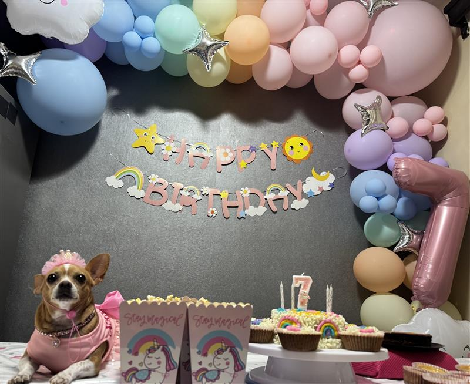

Estar con mi mascota
Mi perrita se llama annie, pero de cariño le digo gorda o chaparra. Me gusta estar acariciandola en todo momento salir al parque o a la tienda con ella.
Actividades favoritas con mi mascota:
- Salir al parque
- Jugar con sus peluches
- Dormir con ella
Detalles que me disgustan de perder tiempo con mi mascota:
- Salir muy noche al parque
- Que no obedezca
- Que quiera pelear con los demás perritos
Annie
Le encantan las galletas y panesitos dulces😅❤️
Momentos favoritos con mi mascota
Festejar su cumpleaños🎂
Me gusta festejar sus cumpleaños como si fuera una niña, a lo mejor mucha gente lo puede ver algo exagerado pero es algo que en verdad disfruto y mucho.